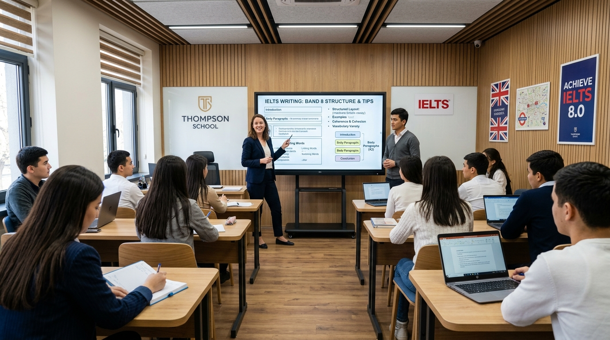
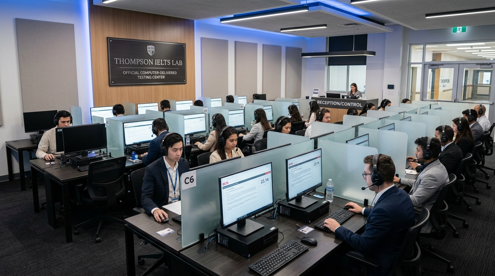
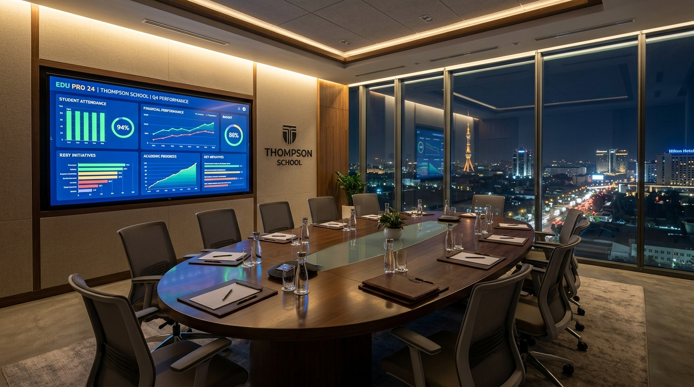

Asoschi: Harry Thompson • Toshkent, O'zbekiston
Yetakchi IELTS akademiyalari uchun maxsus ishlab chiqilgan yaxlit boshqaruv tizimi: To'liq Lead Management & 8 soniyalik AI Speed-to-Lead, to'liq avtomatlashgan CD-IELTS Mock imtihonlari va qimmat turniketsiz smart planshet davomati.

Bo'lajak IELTS o'quvchisi soat 23:00 da Instagram Reels yoki reklama orqali yozganda, unga bir necha daqiqa ichida javob kerak. EduPro²⁴ ning sun'iy intellekt agenti 8 soniya ichida o'quvchi darajasini aniqlaydi va bo'sh o'ringa moslab sinov darsiga yozib qo'yadi.
Administratorlar ulgurmaydi, lidlar soviydi yoki raqobatchi markazlarga ketadi.
24/7 rejimida avtomatik saralash va to'g'ridan-to'g'ri Thompson School dars jadvaliga kiritish.
"Assalomu alaykum! Chilonzor filialingizda shanba kuni IELTS Mock test bormi?"
"Assalomu alaykum Nodir! Shanba 10:00 da Chilonzorda 4 ta o'rin bor. Qatnashish uchun telefon raqamingizni qoldiring."
Instagram Direct, Facebook, Telegram bot, sayt va qo'ng'iroqlar — har bir murojaat avtomatik tarzda markaziy CRM voronkasiga tushadi. Rahbariyat har bir filial (Furqat, Chilonzor) bo'yicha qancha lid kelayotgani va qaysi biri to'lovga yetib borganini real vaqtda ko'radi.

British Council'ning rasmiy hamkori sifatida Thompson School har hafta yuzlab nomzodlarni qabul qiladi. EduPro²⁴ kompyuter zallari bandligini Furqat va Chilonzor filiallari bo'yicha to'qnashuvlarsiz rejalashtiradi, umumiy Band Score ballarini hisoblaydi va o'quvchining shaxsiy Telegramiga rasmiy PDF shaklida yuboradi.
30–50 million so'mlik og'ir temir turniketlar, bino devorlarini buzish yoki lobbida tirbandlik hosil qilish shart emas. Devorga o'rnatilgan ixcham planshet yoki QR-stend orqali o'quvchi 1 soniyada check-in qiladi — ota-onaga esa Telegram Mini App orqali lahzali bildirishnoma boradi.
O'quvchi shaxsiy QR taloni bilan planshet kamerasiga yaqinlashadi. Ota-onaga kelganlik xabari boradi.
O'quvchini eshikda to'xtatib uyaltirish kerak emas. To'lov muddati o'tsa, ota-onaga muloyim Click to'lov havolasi boradi.
"Farzandingiz Sardor soat 08:52 da Furqat filialiga kirdi ✅"
"Hurmatli ota-ona! Aprel oyi to'lovi uchun qulay havola: [ Click orqali to'lash 💳 ]"

1,200+ o'quvchiga ega premium akademiya uchun EduPro²⁴ kelmaslik (no-show) va unutilgan to'lovlar tufayli yuzaga keladigan yo'qotishlarni to'liq bartaraf etadi. Tajribali jamoamiz mavjud tizim va bazalarni 2 soatda xatosiz ko'chirib beradi.
1 oy davomida tizimni real filialingizda sinab ko'ring. Agar siz kutgan natijani bermasa — hech qanday moliyaviy to'lov talab qilinmaydi.
Tizim muvaffaqiyatini faqat texnologiya emas, balki uni joriy etuvchi xalqaro tajribaga ega mas'ul jamoamiz to'liq kafolatlaydi.
GPTify.co asoschisi, Cubeo.ai hammuassisi. 12+ yillik B2B korporativ CRM va amaliy AI tizimlarini qurish tajribasi (Berlin & Toshkent).
Cubeo.ai asoschisi (Ruminiya / Yevropa). 10+ yillik xalqaro SaaS va AI agent tizimlari eksperti. Yuqori yuklamali bulutli infratuzilma me'mori.
PhD, dotsent. 10+ yillik ilmiy va pedagogik boshqaruv tajribasi. Ta'lim jarayonlarini raqamlashtirish va o'qituvchilar bilan ishlash bo'yicha ekspert.
Filiallaringiz (Furqat, Chilonzor) xonalari va mock imtihonlari jadvaliga moslashtirilgan ko'rsatuv.